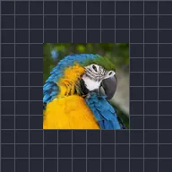

Raster Transform

Ini-scale, iniikot, at ginagalaw ang tapos na larawan ng layer, pagkatapos ng mga epekto sa itaas nito, para ma-transform din ang resulta nila. Pinapanatili ng Fill ang ilang bahagi ng orihinal sa ilalim at pinapanatili ng Mask To Layer ang resulta sa loob ng orihinal na hugis.
Mga Setting
| Setting | Uri | Saklaw | Default |
|---|---|---|---|
| Scale | Numero | 0.01 hanggang 50 | 1 |
| Anggulo | Anggulo | -3600° hanggang 3600° | 0° |
| Offset | Punto (X, Y) | -5000 px hanggang 5000 px | 0 px, 0 px |
| I-mask sa layer | Naka-on o naka-off | – | Naka-off |
| Alpha | Numero | 0% hanggang 100% | 100% |
| Fill | Numero | 0% hanggang 100% | 0% |
| Sampling | Pagpipilian | Nearest, Linear | Linear |